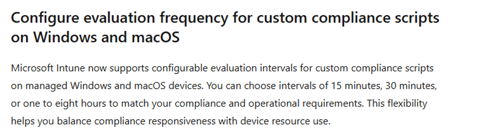
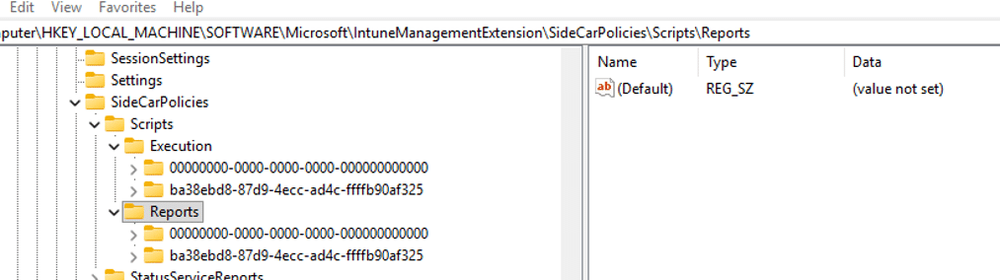
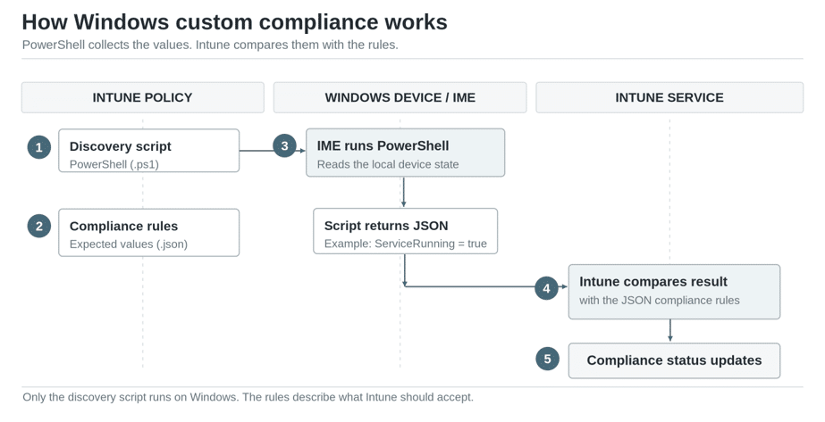
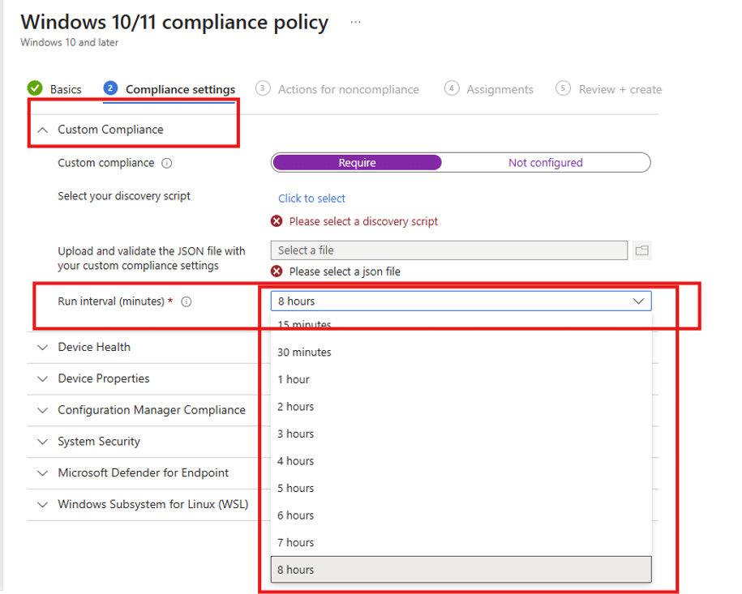
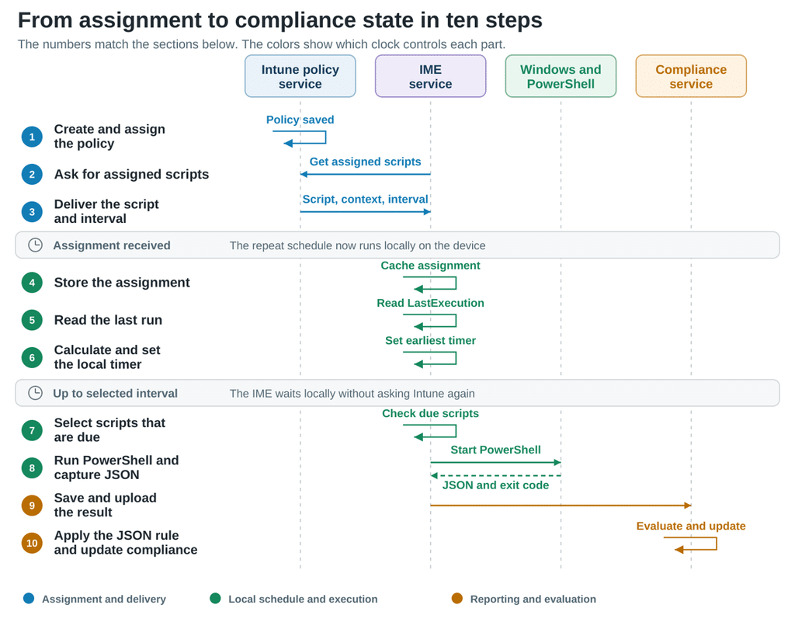
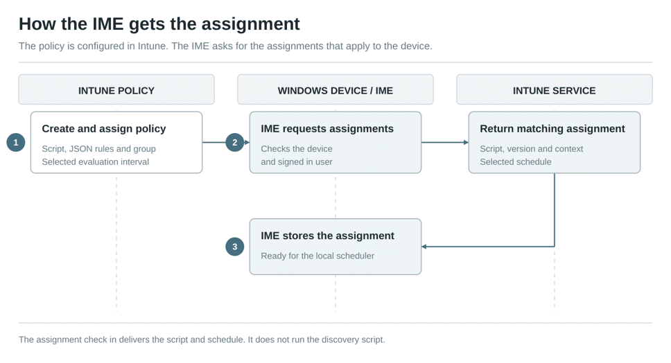
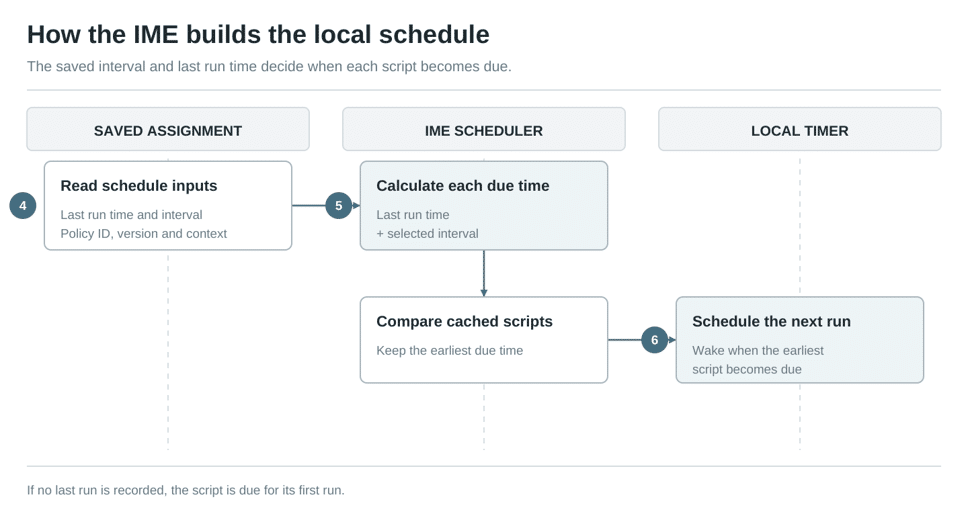
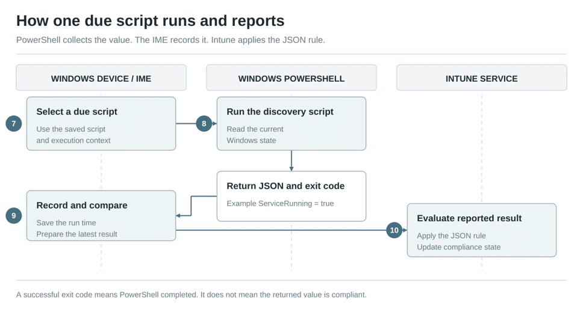
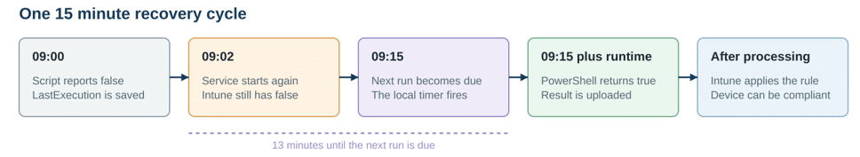

Intune has been getting faster. A Windows device can ask for a fresh compliance check when it detects a supported change, such as the firewall turning off. Push notifications also help devices pick up changes to Windows scripts sooner. There was one wait I still wanted Microsoft to tackle. Custom compliance discovery scripts on Windows could go eight hours between scheduled runs. I was happy to see Configure evaluation frequency for custom compliance scripts on Windows and macOS show up in What’s new in Microsoft Intune.
With Intune 2611, the Evaluation Frequency options are 15 minutes, 30 minutes, or 1 to 8 hours.


Why eight hours Evaluation Frequency was too long for Custom Compliance Policies
To understand the delay, start with the custom compliance policy itself. In Intune, we configured a policy for a third-party security agent. Its PowerShell discovery script checked whether the agent’s Windows service was running. The JSON rule expected the script to return true. If the service was stopped when the script ran, Intune marked the device as noncompliant.
Now imagine the script reports that the service is stopped. You fix the problem a minute later and start the service again. The device is healthy, but Intune still has the false result from the previous script run. Fixing the service does not automatically give Intune a fresh result.
Under the old schedule, the next discovery script run could be almost eight hours away. Until that run reported true and Intune processed the new result, the device could remain noncompliant. If Conditional Access required a compliant device, the user could still be blocked long after the actual problem was fixed. Microsoft documents that original Windows cadence in the custom compliance overview.
How we forced a fresh Custom Compliance result before
Before we could configure the evaluation frequency, we needed another way to get a fresh result. The easiest option was Company Portal. On the affected device, the user could open Company Portal, go to Devices, select the device, and choose Check access. This synced the device with the current requirements and re-evaluated its access. For custom compliance, it could also run the discovery script again and pick up the repaired service state.
That worked when you needed to refresh one device. Repeating the same test several times in a lab required a more direct method.
Each custom compliance script has a GUID. You can find it in the script URL in the Intune admin center. On the test device, that GUID is also used below the Execution and Reports branches for the system or user context that ran the script.
HKLM\SOFTWARE\Microsoft\IntuneManagementExtension\SideCarPolicies\Scripts


Clearing the entries for that script and restarting the Intune Management Extension service removed the previous execution and report state. The IME could then treat the script as ready to run again and produce a fresh result.
This was useful for troubleshooting, but it was still a manual reset on one device. It did not give every managed device a shorter and more predictable evaluation schedule.
The original Call4Cloud walkthrough used BitLocker to demonstrate this process. BitLocker made the behavior easy to show, although Intune already provides a built-in Require BitLocker compliance setting. A third-party security service is a better example of why custom compliance is useful because it checks something that the standard compliance policy does not already cover.
The hourly Evaluation Frequency Custom Compliance cadence we saw in July
Getting another result on demand helped when you were working on one device. The July change was about how soon the device could check again on its own. The logs from IME 1.103.101.0 pointed to an hourly schedule when enabled and support for intervals measured in minutes. I covered those findings in Intune Custom Compliance Policies and the Hourly Cadence Fix.
With the hourly schedule enabled, the IME could rerun the discovery script already on the device. If you restarted the service just after a check, the next run could pick up the fix about an hour later. The IME could then send the new result to Intune.
Intune 2611 puts the interval in the policy. One hour is one of the choices. For the same service check, you can also choose 30 minutes or go down to 15 minutes.
What a custom compliance policy checks
Custom compliance lets you write a rule for something specific to your company. On Windows, you add one PowerShell discovery script and a JSON rules file per policy. The script can return several values in one run. Each rule names the value it checks and says what counts as compliant.
For our security agent, the script checks whether its Windows service is running. It calls that value ServiceRunning. When the service is running, the script could return this.
{“ServiceRunning”:true}
The rule looks for ServiceRunning and requires true. The script can run successfully and return false when the service has stopped. Intune can then mark that setting noncompliant. The custom result counts toward device compliance alongside the built in checks. Microsoft lists the rule fields in the JSON rules guide.


The script reports what it found on the device. Intune evaluates that value against the rule.
Where to set the Evaluation Frequency for Custom Compliance Scripts
To set the interval for this check, open the Intune admin center and go to Devices > Manage devices > Compliance > Create policy and select Windows 10 and later.
Under Compliance settings > Custom Compliance, set Custom compliance to Require. Select the discovery script, upload your JSON rules, and choose Custom compliance evaluation frequency. Microsoft lists the new step in the Windows policy setup guide.
The added step also appears in the November 15 documentation diff.
Windows policy mockup


For a quick check like this one, I’d start with 15 minutes. An hour can make sense when the script takes more work to run, or the result can wait a bit longer.
The same setup can check whether an application meets your minimum version. The discovery script reports the installed version and the rule sets the minimum. Chrome is the example in our Patch My PC guide to custom compliance for third party apps.
How the Evaluation Frequency custom compliance runs on Windows
The custom compliance policy contains the discovery script, JSON rules, assignment, and evaluation frequency. During an IME script check-in, the device receives the script, its version, the execution context, and the selected interval. The IME stores that assignment locally. The JSON rule remains in Intune, ready to evaluate the result the device returns.
The IME reads the previous execution time and adds the selected interval to calculate when the script should run again. It then sets a local timer. When the script becomes due, the IME starts PowerShell, captures the JSON output, records the new execution time, and sends the result to Intune.
Two clocks matter here. The assignment check-in controls when the device learns about a changed script or interval. The local timer controls repeat runs after the assignment arrives. Intune applies the JSON rule after each uploaded result and then updates the compliance state.


What the IME keeps locally
The IME keeps the assigned script, its schedule, the last execution time, and the latest report on the device. The active timer runs inside the IME service. The execution and report history remain available after the service restarts.
| Log or store | What it shows |
| HealthScripts.log | Assignment requests, the minute schedule, calculated due time, scheduled runs and result upload |
| AgentExecutor.log | The PowerShell launch, execution context, output, exit code and script errors |
| Execution registry | LastExecution for the context, policy ID and assignment version |
| Reports registry | The cached result used for comparison and reporting |
The key timestamp is LastExecution. After the service restarts, the IME reads the current assignment and that timestamp, calculates the next due time, and rebuilds the local timer.
HKLM\SOFTWARE\Microsoft\IntuneManagementExtension\SideCarPolicies\Scripts\Execution\<context GUID>\<policy ID>_<version>\LastExecution
The Ten Evaluation Frequency for Custom Compliance Scripts steps in detail
The steps below follow the same path from policy delivery to the final compliance result.
Steps 1 to 3: Getting the Custom Compliance Script assignment


Step 1: Intune stores the Custom Compliance policy
The policy joins four things in the cloud. It has the PowerShell discovery script, the JSON rules, the group assignment, and the evaluation frequency. For our service example, the script returns ServiceRunning and the JSON rule requires true.
Step 2: The IME asks for script assignments
Shortly after the IME service starts, it schedules a script assignment check in. In IME 1.108.101.0, that first request is spread across roughly one to five minutes. A user sign in can also start the request, and the regular assignment refresh runs every eight hours. Microsoft describes the normal IME check in and manual sync behavior in the IME documentation.
The request uses the IME script channel and asks Intune for the assignments that apply to the device and signed in user. In the log, this starts with Requesting health scripts and ends with the number of scripts returned.
Step 3: The IME stores the assignment
The response includes the script identity, assignment version, execution context, content, and schedule. The IME stores that assignment locally so it is ready when the script becomes due. When an administrator changes the interval, the next assignment refresh brings the new value to the device.
Steps 4 to 6: Building the local schedule


Step 4 The IME reads the last Custom Compliance run
The IME looks up LastExecution for the device or user context, policy ID, and assignment version. Including the version matters because a changed script starts with its own execution history.
Step 5: The next due time is calculated
For a minute schedule, the calculation is simple. The IME adds the selected interval to the last recorded execution time. A run recorded at 09:00 with a 15-minute interval becomes due at 09:15.
Next due time = LastExecution + selected interval
The IME checks the time again just before execution. This keeps each script on its own schedule when another assignment wakes the service earlier.
Step 6: The IME sets the local timer
The IME calculates the due time for each cached script and chooses the earliest one. It sets one local timer for that point. When an earlier time is already queued, the IME keeps it. After each pass, the due times are calculated again, and the timer is set for the next script.
This is what turns the new setting into a true 15-minute cadence. Intune delivers the schedule during the assignment check-in. The IME timer starts the repeat runs between those check-ins.
Steps 7 to 10: Running and reporting


Step 7: The timer selects the scripts that are due
When the timer fires, the IME reads the cached assignments for the device and signed in users and checks their schedules again. Only scripts that are due continue to execution. The IME also prevents two scheduled passes from processing the same work at the same time.
Step 8: PowerShell runs the discovery script
The IME prepares the discovery script and starts PowerShell in the configured system or user context. It waits for the script to finish and captures the output and exit code.
For the stopped security agent, the discovery script can complete successfully and return this value.
{“ServiceRunning”:false}
A successful exit code confirms that PowerShell completed. Intune still applies the JSON rule to decide the state of ServiceRunning.
Step 9: The IME records and compares the result
After the run, the IME writes a fresh LastExecution value. That happens even when the script returns the same value as before, so the next interval starts from the latest run.
The IME also compares the new result with the cached report. A changed result is saved under Reports and prepared for upload. If the value is the same, the cache already represents the current result.
Step 10: Intune evaluates the reported result
The IME sends the result through its normal service connection. A successful upload is marked as sent. A failed upload stays available for another attempt.
Intune matches the returned property names to the JSON rules in the policy. When ServiceRunning is false, and the rule requires true, that setting becomes noncompliant. The result then contributes to the device compliance state used by reporting and Conditional Access.
First assignment and repeat runs
A newly assigned script version has no LastExecution value. The IME therefore treats it as due. In this tested client build, the assignment flow can queue the first run about five minutes later. That short delay is a safety interval used around a first or overdue run.
Once the first run finishes, the normal loop begins. The IME records the execution time, adds the selected interval, and arms the next timer. Service restarts follow the same model because the execution timestamp is kept in the registry.
What the 15-minute setting controls
The setting controls when the cached discovery script becomes due on the device. Script startup, PowerShell runtime, connectivity, result upload, and Intune processing happen around that due time. The admin center therefore updates after the local run and service processing have finished.
Say the discovery script reports that the security service is stopped at 09:00. You start the service again at 09:02. With a 15-minute frequency, the next run becomes due at 09:15. That leaves about 13 minutes before the device can discover the fix, followed by the time needed to report and process the new result.


Summary
The new setting gives the IME a supported evaluation interval for custom compliance scripts. The device receives the assignment, reads the last execution time, calculates the next due time, sets a local timer, runs PowerShell, and sends the JSON result to Intune.
That is the improvement we were waiting for. The discovery loop can now repeat in minutes. The registry reset remains useful when a lab test needs an immediate rerun, while production devices can follow the interval selected in the policy.